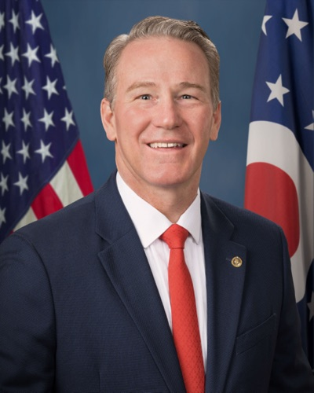

| 최신 여론조사 | ||||||
| 최신순 · 7건 · 양수 = 민주 우위(D+) | ||||||
| 조사기관 | 실사기간 | 모집단 | 표본 | 결과 | 마진 | 비고 |
|---|---|---|---|---|---|---|
| BGSU/YouGov | 2026-09-01 ~ 2026-09-10 | LV | 1000 | Brown 48 – 45 Husted | D+3 | ±4·일일 브리핑 09/17 추출·원문 대조 일치·레비(무소속) 3%, 레드패스(자유당) 2% |
| InsiderAdvantage | 2026-09-08 ~ 2026-09-09 | LV | 1200 | Brown 47 – 42 Husted | D+5 | ±2.83·일일 브리핑 09/12 추출(언급 4회)·원문 대조 차단/오류(URLError)·공화 성향 하우스 |
| ★ Fox News/Beacon·Shaw | 2026-08-06 ~ 2026-08-10 | RV | 1008 | Brown 53 – 45 Husted | D+8 | ±3·6월 폭스(+8)와 동일 — 같은 조사서 주지사 라마스와미는 우위 |
| Emerson College | ~2026-07-02 | — | — | Brown 44 – 50 Husted | R+6 | 게시일 기준 |
| ★ NYT/Siena | 2026-06-15 ~ 2026-06-29 | LV | — | Brown 47 – 50 Husted | R+3 | 6개 주 패키지 |
| ★ AARP/Fabrizio·Impact | 2026-06-14 ~ 2026-06-16 | LV | 800 | Brown 48 – 45 Husted | D+3 | ±3.5 |
| ★ Fox News | 2026-05-28 ~ 2026-06-01 | — | — | Brown 53 – 45 Husted | D+8 | |
| 출처 URL은 `data/senate_polls.csv`에 행별로 보관합니다. 당파 후원(D/R 성향) 조사는 공개 선택 편향이 있으니 단일 조사보다 여러 조사의 방향을 함께 보세요. 표는 데이터에서 자동 렌더되며 새 조사가 들어오면 갱신됩니다. ★ = 주목 기관(NYT/Siena·Fox News·Marist·AARP) — 추이 그림에서도 큰 점으로 표시합니다. | ||||||
| 이번 주 판독 — **핵심 탈환 4곳 중 유일하게 이번 주 민주 쪽으로 악화된 주다.** 전주에 "누적 2.98억 달러 포화 광고 속에서 브라운 우위가 압축되는지가 유일한 판별 지표"라고 적었는데, 첫 시사가 압축 쪽으로 나왔다 — 다만 신규 실사가 아니라 평균의 산술이라 다음 단일 조사로 확인해야 한다. 광고는 AdImpact 기준 **3억 700만 달러**(공화 약 1.69억 대 민주 약 1.38억)로 사이클 상원 최대가 확정됐고, 선행 확정 1.16억 달러가 남아 있다. 전쟁 변수는 양면이다 — 허스티드가 9/23 종전 요구로 로저스·힌슨 흐름에 합류했는데 **다음 날 9/24 상원 이란 전쟁권한 결의안(50–49 부결)에 반대표**를 던졌고, 브라운 캠프는 즉시 "14번째 전쟁 지속 표결"로 전환했다. 브라운은 9/26 프리몬트 유세에서 전쟁·관세·데이터센터를 생활비 서사 하나로 묶었다. | ||||||
오하이오 Ohio
Brown (D) vs Husted (R·임명직) · OH
공화 방어Cook Toss-up 09-23Sabato Toss-up 09-22IE Toss-up 09-17Kalshi 민주 58¢
조사 마진 추이 (양수 = 민주 우위 · 속 빈 점 = 당파 후원 조사)
데이터 기준 2026-09-26
- 여론조사 09-26 — 이번 기간 새로 발표된 단일 여론조사는 없으며, 현재 기준점은 리얼클리어폴리틱스 평균(~9/25) 브라운 +4다 — 폭스뉴스 8월 조사(브라운 +8)보다 좁혀진 수치다(CW콜럼버스).
- 판단 09-28 — 양 캠프의 광고전은 점점 물가(유가·식료품)와 데이터센터/AI 투자 쟁점에 집중되고 있으며, 이는 이번 주 아이오와·텍사스에서도 나타난 “이란전-유가 거리두기” 흐름과 맞닿아 있다.
Vance 부통령 승계로 임명된 Husted(R)의 특별선거 — 전 3선 상원의원 Brown(D)이 도전하는 구도입니다. Husted는 2025-01-17 DeWine 주지사가 임명(선거 아님)했으므로 11/3이 그의 첫 연방 단위 본선입니다. 2024년 트럼프가 약 +11pt로 이긴 주지만, 임명직 현역 vs 높은 인지도의 전직이라는 비대칭이 변수입니다. 조사 기관 편차가 이 레이스의 특징입니다 — 같은 시기 Fox는 브라운 +8, 에머슨은 허스티드 +6으로 14포인트나 갈립니다(아래 표). 어느 한 조사도 단독으로 신뢰하기 어려운 진성 토스업입니다. 승자는 잔여임기만 채우고 2028년 정규 임기를 두고 다시 재선에 나서야 합니다.
- 구도: 공화 방어 특별선거(Vance 승계) — 임명직 Husted(R) vs 전 3선 Brown(D).
- 변화: 임명직 현역 vs 높은 인지도 전직의 비대칭. 조사 기관 편차가 극심(Fox 브라운 +8 ↔︎ 에머슨 허스티드 +6). 등급은 Cook이 4/13 Lean R→Toss Up으로 내린 뒤 그대로이고, Sabato가 6/11에 두 달 늦게 따라왔습니다.
- 한국 함의: Brown은 KORUS 반대표(직접 확인) — 당선 시 한국 통상에 강경 가능성(역설).
- 특별선거의 배경: JD Vance가 부통령 취임을 위해 상원직을 사임하면서 생긴 공석으로, 오하이오 1954년 이래 첫 연방 상원 특별선거입니다. 승자는 Vance의 잔여 임기(2028 만료)를 채웁니다. (Wikipedia)
로컬 상황 — 일일 기록
로컬 상황 · 일일 정리본에서 날짜별 누적 · 같은 사안은 처음 본 날짜로 한 번
- 09-28 폴리티팩트는 브라운 캠프의 광고(서스티드가 오하이오 데이터센터 세제 혜택을 주도했다는 주장)에 “대체로 사실(Mostly True)” 판정을 내렸다 — 서스티드는 부지사 재임(2019~2025년) 중 데이터센터 확장을 적극 추진했고, 그 기간 오하이오 세액공제청은 관련 세제 혜택 약 25억 달러(2017~2024년)를 승인했으나, 최종 승인권자는 서스티드 개인이 아니라 세액공제청이었다. PolitiFact Local 12/WKRC는 양측 광고의 물가·이민·건강보험 주장을 별도로 검증했다(배경). Local 12
- 09-27 셰러드 브라운은 9/26 프리몬트 유세에서 허스티드가 “이란 전쟁에 계속 찬성표를 던지고 보험료 인상에도 계속 찬성해왔다”고 비판하며 관세와 전쟁을 인플레이션 주요 원인으로 지목했다. 데이터센터에 대한 24억 5천만 달러 규모 세금 지원 지지 의혹을 놓고도 양 캠프가 공방했다(허스티드 캠프는 허위라 반박, 브라운도 2015년 아마존 데이터센터 지지 이력으로 반격당함). 13abc 워싱턴타임스는 브라운의 2024년 낙선 관련 유권자 인지도 이슈를 다룬 기사를 냈다(접근 제한으로 본문 미확인). Washington Times
- 09-26 9/24 상원은 초당적 이란전쟁 권한 결의안을 50-49로 부결시켰는데, 유가 문제로 전쟁의 신속한 종결을 공개 촉구해온 허스티드가 반대표를 던졌다 — 브라운 캠프는 이것이 허스티드의 14번째 같은 종류 표결이라고 지적한다(NBC뉴스, 데이턴데일리뉴스). 허스티드는 이란이 승리하면 호르무즈 해협을 장악해 유가가 계속 높게 유지될 것이라는 논리로 반대표를 방어했다.
- 09-25 허스티드가 유가를 이유로 이란전쟁의 신속한 종결을 촉구했다(워싱턴이그재미너) · 팩트체크닷오알지는 민주당 광고가 허스티드를 퍼스트에너지 뇌물 스캔들과 연결한 것에 대해, 후원 사실(약 350만 달러)은 정확하나 허스티드가 기소되거나 혐의를 받은 바는 없다고 판정했다(팩트체크닷오알지).
- 09-24 허스티드의 전쟁 종결 요구가 이번 창에서 새로 확인됐다(News 5 Cleveland, 9/23) · 폭스뉴스는 힌슨·로저스·허스티드를 하나의 흐름으로 묶어 보도했다.
- 09-23 이월: Brown의 ‘전쟁·물가’ 메시지가 봄부터 지속(Signal Ohio, 6월) — Husted가 전쟁에 13번 찬성했다고 공격. Husted는 Rogers·Hinson과 달리 아직 전쟁 문제로 공개 결별하지 않았다.
- 09-22 밴스 잔여 2년 특별선거, 허스테드는 드와인 주지사 임명직
- 09-19 데이터센터가 오하이오 고유 이슈로 남음 — 허스티드는 데이터센터 사업자 전력비 부담 법안 발의, 마켓대 조사 71%가 편익보다 비용이 크다고 응답, 5개 산업 개발 유형 중 최하위(12%). 이월: 오하이오 상원 토론 협상 미타결(8월 기준 합의 캠프 없음, 브라운은 토론 희망). 【수집 필요 — 협상 현황】
- 09-16 허스티드가 법집행 인사들의 브라운 이탈을 공격 소재로 계속 사용(ICE 협력·공공안전 프레임).
- 09-15 이월: 허스티드가 9/11 무장친위대 이미지 문제로 정치국장 스티븐 보이텍 해고 · 브라운 스프링보로 행사 “디젤값이 사상 최고를 찍는 동안 나는 댈러스로 날아가 연설하지 않았다” · FactCheck는 브라운의 “전기요금 수천 달러” 주장도 지적, 오하이오주립대 노아 도머디는 요금 상승 주원인을 데이터센터 수요로 지목
- 09-14 정치국장 나치 이미지 논란 해고(9/11). 브라운 스프링보로 유세·스튜번빌 IBEW 방문(9/12).
- 09-13 J.D. Vance 잔여 임기를 채우는 특별선거이며 Husted는 DeWine 주지사가 임명
기준 2026-10-02 · 최근 12건 표시(전체 20건)
의석 현황 — 현직·공석
- 특별선거 — 임명직 현직: JD Vance(공화)가 부통령 취임을 위해 2025년 1월 상원직을 사임했고, DeWine 주지사가 Jon Husted 부지사를 후임으로 임명했습니다. 이번 선거는 2028년까지 남은 잔여 임기를 채우는 특별선거이며, 선출된 적 없는 임명직 현직 Husted가 전직 상원의원 Brown과 맞섭니다. (Wikipedia)
개관
선거사: 2024 대선 Trump +11(2016·2020의 +8보다 확대). 같은 해 상원에서 Brown은 Moreno에게 +4.6 패배해 18년 임기를 마쳤습니다 — 즉 이번은 그의 비연속 4선 도전입니다. 오하이오는 2008·2012 Obama 지지 후 우경화한 중강 공화 우세 주입니다. (Ohio Capital Journal)
경제 — 한국 배터리 투자의 재조정: Honda–LG에너지솔루션 오하이오 EV 배터리 합작공장($44억)이 핵심인데, 2025-12 LGES가 공장 건물 자산을 Honda에 약 $28.6억에 매각(EV 수요 둔화 속 한국 배터리사들의 미국 전략 재편 맥락). 2026년 양산 예정입니다. (Korea Herald)
경제·인구 구성
- 인구는 2025년 7월 기준 약 1,190만 명입니다. (Census QuickFacts)
- 인종 구성은 2024년 9월 자료로 백인 76.6%, 흑인 11.9%입니다. 히스패닉·아시아계 비율은 같은 자료에 없어 미확인입니다. (Ohio LSC)
- 중위 가구소득은 2024년 ACS 기준 71,389달러입니다. (Census QuickFacts)
- 콜럼버스·클리블랜드·신시내티, 이른바 3C 대도시권을 중심으로 도시화돼 있고 인구밀도는 전국 10위 수준입니다. (Wikipedia)
- 제조업 규모는 전국 3위, 자동차 생산은 2위입니다. Intel이 뉴올버니에 280억 달러 규모 반도체 공장을 짓고 있습니다. (Wikipedia · NIST)
역대 선거 결과의 특징
대선 10회 — 민주 4 · 공화 6 / 상원 (class 1) 7회 — 민주 4 · 공화 3 / 상원 (class 3) 7회 — 민주 2 · 공화 5 / 주지사 10회 — 민주 2 · 공화 8 · 파랑 = 민주, 빨강 = 공화, 회색 = 무소속 · 점선 테두리 = 특별선거 · 칸에 마우스를 올리면 마진 · 출처 위키백과 개별 선거 문서(기준 2026-09-30)
- 대선은 2012년 Obama +3.0%p, 2016년 Trump +8.1%p, 2020년 Trump +8.0%p, 2024년 Trump +11.2%p였습니다. (Ballotpedia)
- 연방상원은 2018년 Brown(D) 53.4% 대 46.6%, 2022년 Vance(R) 53.0% 대 46.9%였습니다. 2024년은 Moreno(R) 50.1% 대 Brown 46.5%였습니다. (Ballotpedia)
- 주지사는 2018년 DeWine(R) 50.4% 대 46.7%, 2022년 DeWine 62.4%로 공화가 이겼습니다. (Ballotpedia)
- 2012년까지 경합주였으나 이후 세 번의 대선에서 공화 마진이 계속 커졌습니다. Brown이 2018년까지 상원을 지킨 분할투표 습관은 2024년에 끊겼습니다.
주지사·주의회
- 현 주지사는 공화당 Mike DeWine으로 2019년 1월 취임해 2023년 재취임했습니다. 연임 제한으로 2026년 주지사 선거는 공석 경쟁입니다. (Ballotpedia)
- 주상원 33석은 공화 24·민주 9, 주하원 99석은 공화 65·민주 34입니다(136대 주의회). 2010년 이후 공화 트라이펙타가 이어집니다. (Wikipedia)
- 2026년 11월 3일에는 주지사·검찰총장·재무관 등 주 전체 선출직과 주하원 99석 전체, 주상원 17석이 상원 특별선거와 함께 걸려 있습니다. (Ballotpedia)
유권자 등록·투표율
- 등록 유권자는 7,896,681명입니다(2026년 5월 프라이머리 인증 기준). 정당 등록제가 없어 정당별 집계는 없습니다. (Ohio SOS)
- VEP 투표율은 2018년 50.2%, 2020년 67.1%, 2022년 47.1%입니다. 2024년 확정치는 미확인입니다. (U.S. Elections Project)
셰러드 브라운 Sherrod Brown민주
1952년생(74세) · 전 연방상원의원(2007~2025) · 전 연방하원의원(1993~2007)
가족 부인 Connie Schultz(퓰리처상 수상 칼럼니스트, 2004년 결혼), 네 딸
학력 Yale University 러시아학 학사(1974), Ohio State University 교육학 석사(1979)·행정학 석사(1981)
경력 오하이오 국무장관(1983~1991) · 연방하원 다선(1993~2007) · 연방상원 3선(2006·2012·2018) · 2024 상원 낙선(Brown 46.5% vs Moreno 50.1%, R+3.6)
펀드레이징 1분기 약 1,250만 달러 모금(주로 소액), 보유현금 약 1,650만~1,700만 달러로 Husted의 2배 이상
강점
- 노동·블루칼라 기반 강한 개인 브랜드
- 비MAGA 공화 교차지지(Fox 조사 31%)
- 자금 우위·높은 인지도
약점
- 2024 낙선 직후 비연속 재도전 부담
- 2024 트럼프 +11 구조적 역풍
- 특별선거 저투표율 시 동원 불확실
정책 공정무역(fair trade) 시그니처 이슈 · 중국·철강 관세 유지 지지 · 제조업·노동자 보호
🇰🇷 한국 함의 한미 FTA(KORUS) 비준 반대표. 한국 비관세장벽·환율개입 비판, 한국산 유정용 강관 덤핑 문제 제기 등 대한 통상 강경 성향

존 허스티드 Jon Husted공화 · 현직
1967년생(59세) · 임명직 연방상원의원(2025.1~) · 전 오하이오 부지사
가족 부인 Tina(2005년 결혼), 세 자녀, 컬럼버스 거주
학력 University of Dayton 교육학 학사(1989)·커뮤니케이션 석사(1993)
경력 오하이오 하원의원(2001~2009, 하원의장) · 오하이오 국무장관(2011~2019) · 오하이오 부지사(2019~2025) · 2025.1 상원 임명(선거 아님) — 11/3이 첫 연방 본선
펀드레이징 1분기 약 290만~370만 달러, 보유현금 약 810만~900만 달러로 Brown에 열세. 공화 SLF가 7,900만 달러 지원 예고
강점
- 현역 프리미엄
- 트럼프·공화 인프라(SLF 대규모 외부지출)
- 부지사 시절 Intel 반도체 등 제조업 유치 실적
약점
- 임명직이라 본선 검증 미경험(정당성 약점)
- 유권자 46%가 ‘트럼프와 너무 가깝다’ 우려
- Epstein 연루 후원자 네거티브 공방
정책 친트럼프 노선·대중국 관세 등 트럼프 통상 의제 옹호 · 반도체·제조업 투자 · 핵심광물·철도안전·보훈 입법
🇰🇷 한국 함의 한국 관련 직접 입장은 공개 출처에서 확인되지 않음
roll-call / 입법 관심사
Sherrod Brown (D, 전 3선 상원의원) — 8개 경합주 후보를 통틀어 한국과 직접 관련된 표결 기록이 가장 뚜렷한 인물입니다(단, 방향은 대한 통상에 강경).
- KORUS(한미 FTA) 반대표 — 직접 확인: 2011-10-12 상원이 KORUS 이행법을 83–15(Roll Call 161)로 가결할 때 Brown은 반대 15인 중 한 명이었고, 같은 날 한국·파나마·콜롬비아 세 FTA 모두에 반대했습니다. 한국의 비관세장벽·환율개입이 미국 자동차 생산자에 불리하다는 논거였습니다. (Brown 상원 뉴스룸 · OnTheIssues)
- 대북 — 직접 확인: NDAA에 Otto Warmbier 핵제재강화법(2019) 조항을 확보했습니다 — 북한 억류 후 사망한 오하이오 출신 Warmbier를 기려 명명, 대북·금융 조력자 제재를 강화. (Brown 상원실)
- 그 밖에 중국 PNTR 반대(1999)·환율조작 대응 입법 공동발의 등 일관된 통상 매파입니다. (주한미군·THAAD 직접 표결은 미확인.)
Jon Husted (R, 임명직 현역) — 2025-01 임명(전 부지사·주국무장관). 표결 출석률 100%이나 재임이 짧고, 한국·통상 관련 직접 표결·입장은 식별되지 않습니다(임명직이라 KORUS 등 과거 표결 자체가 부재). (GovTrack)
경선·본선 방식
- 특별선거 구조: 본선 11/3, 경선은 정규 주 경선과 동시인 5/5(Husted 공화 무투표 단독, Brown 민주 약 89% 승). 오하이오는 등록 시 정당을 표기하지 않고 경선 당일 당 용지를 요청하는 행위가 그 당 등록으로 간주되는 declare-at-poll 준-폐쇄형입니다. (Ballotpedia)
- 사진 신분증(HB458, 2023): 거의 모든 유권자에게 사진 부착 신분증을 의무화하고, 부재자 신청 마감을 선거 7일 전으로·반송 마감을 선거 후 4일로 단축, 카운티당 드롭박스를 1곳으로 제한했습니다. (Democracy Docket)
우편·조기 투표
- 우편(부재자)투표는 사유 없이 누구나 신청할 수 있습니다. 2026년 본선의 신청 마감은 10월 27일 오후 8시 30분입니다. (Ohio SOS 부재자투표)
- 반송 용지는 소인과 무관하게 선거일 오후 7시 30분까지 카운티 선관위에 도착해야 합니다. 2023년 개정으로 소인 유예가 사라졌습니다. (Ohio SOS 부재자투표)
- 대면 조기투표는 2026년 본선 기준 10월 6일에 시작합니다. 2023년 HB 458로 선거 전날 월요일 투표는 폐지됐고, 요일별 시간은 공식 일정표를 따릅니다. (Ohio SOS 2026 일정)
- 드롭박스는 카운티당 1개만 두고 24시간 영상으로 감시합니다. 본인 용지만 넣을 수 있습니다. (Ohio SOS FAQ)
- 임시(provisional)투표는 명부 불일치나 신분증 미소지 때 발급됩니다. 선거일 뒤 4일 안에 선관위에 신분증을 보여야 표가 인정됩니다. (Ohio SOS 임시투표)
유권자 등록
- 2026년 본선의 등록 마감은 10월 5일입니다. (Ohio SOS 등록)
- 온라인 등록은 VoteOhio.gov에서 가능합니다. (Ohio SOS 등록)
- 자동 등록(AVR) 시행 여부는 공식 사이트에서 미확인입니다.
- 선거 당일 등록은 허용되지 않습니다. (Ohio SOS FAQ)
신분 확인
- 사진 신분증이 필수인 엄격(strict) 사진 ID 주입니다. 2023년 HB 458로 강화돼 같은 해 4월 6일부터 시행됐습니다. (Ohio SOS 신분증 · SOS 보도자료)
- 인정 신분증은 오하이오 운전면허증·주 발급 ID·임시 ID, 미국 여권·여권카드, 군 신분증입니다. (Ohio SOS 신분증)
- 신분증이 없으면 임시투표를 하고 선거일 뒤 4일 안에 신분증을 제시합니다. 종교적 이유로 사진 촬영을 거부하면 선서진술서로 대신합니다. (Ohio SOS 신분증)
최근 14일 · 최신 10월 2일 (금) · 원천은 상원 일일 브리핑(매일 오전 갱신)입니다. “정리본”은 발행 단계에서 고정 구조로 압축한 것(원문에 없는 수치는 넣지 않음), “원문 전재”는 브리핑을 그대로 옮긴 것입니다. 종결체가 다르고, 이후 정정된 사실이 있을 수 있습니다. 판세의 현재 값은 위 카드·표를 보세요.
10월 2일 (금) · 원문 전재
- Brown leads Husted in Ohio Senate race (Political Wire, 9/30) 및 Newsweek 종합(10/1) — USA Today/Suffolk(9/23~27, ±4.4): 브라운 47, 허스테드 44(+3). Marist(51 대 43, 9/24~27, 등록유권자 1,298명, 브라운 +8)와 함께 평균 약 +3~+5의 구도를 양쪽에서 감싼다. Suffolk 수치는 Newsweek/RCP 목록을 경유.
- Daily Kos pundit roundup (9/30) — 좌파 성향 출처. 백악관 관계자들이 오하이오·알래스카를 우려한다는 다른 보도를 전하나 여기서 독립 검증하지 못함 — 신뢰도 낮음.
- 트럼프는 10/3(토) 허스테드 지원 유세 예정(직전 브리핑, Newsweek 경유).
원천: _NIS 상원 일일 브리핑 KR(2026-09-19 ~ 2026-10-02). 추출 scripts/ingest_senate_daily.py · 렌더 daily_log_md().
이 표는
data/senate_polls.csv에서 자동 생성됩니다 — 프로즈에 수치를 박아두지 않으므로 새 조사가 수집되면 이 페이지도 함께 갱신됩니다. 단일 조사보다 여러 조사의 방향을 보세요.
조사 동향 — 일일 기록
여론조사 동향 · 일일 정리본에서 날짜별 누적 · 같은 사안은 처음 본 날짜로 한 번
- 09-26 이번 기간 새로 발표된 단일 여론조사는 없으며, 현재 기준점은 리얼클리어폴리틱스 평균(~9/25) 브라운 +4다 — 폭스뉴스 8월 조사(브라운 +8)보다 좁혀진 수치다(CW콜럼버스).
- 09-17 BGSU/YouGov 9/1–10, 오하이오 적극투표층 1,000명, 약 ±4, 9/16 발표: 브라운 48–허스테드 45(레비 무 3, 레드패스 자 2) · 폭스(8/6–10) 브라운 +8 · 인사이더어드밴티지(9/8–9) 브라운 +5 · 실버 불레틴 평균 브라운 +4 · RCP 평균 브라운 +3.2(48.6–45.4) · 폴스맥스 허스테드 +0.4(이견) · 사바토 9/3 Tilt R → 초접전.
- 09-16 InsiderAdvantage(9/8–9, 1,200 LV, ±2.83, 공화 성향): 브라운 47–허스티드 42. Silver Bulletin 평균 브라운 +4. 세이버토 9/3 Tilt R→Toss-up. RealClearPolitics 평균 브라운 +3.3(48.8–45.5). Pollsmax는 허스티드 +1.1로 이견. 8월 폭스뉴스 브라운 +8.
- 09-12 InsiderAdvantage(9/10 공개, n=1,200LV, ±2.83): 브라운47–허스티드42. 인용: Fox News 6월·8월 브라운+8(2회); Abacus Data(8/28) 브라운52–46; Pollsmax 평균 허스티드+1.1(46.9/45.8).
- 09-06 Abacus Data(오하이오, 8/28) 브라운 52 – 허스티드 46 — 오늘 Pollsmax 트래커를 통해 확인됐고 본 브리핑에 미기록 상태였음. 실사 기간·표본을 원출처로 확인하지 못해 잠정 처리. 그 외: Fox 브라운+8(8/13, 재확인) · Silver Bulletin 평균 약 브라운+3 · Pollsmax는 허스티드+1.1 근거로 허스티드 약53% 모델링 · Kalshi 내재D51%.
기준 2026-10-02 · 최근 5건 표시(전체 5건)
최신 자금 상황 (기준 2026-09-26) — 누적 광고 $3억 700만(AdImpact — 공화 약 $1.69억 대 민주 약 $1.38억) — 사이클 상원 최대 확정 · 선행 확정 $1.16억 · SLF $7,900만 대 SMP $2,400만(이월)
| FEC 분기 신고 — 사이클 누적 | ||||
| 취득 2026-09-28 · 단위 $M · 후보 본인 위원회 기준 | ||||
| 후보 | 정당 | 사이클 누적 모금 | 보유 현금 | 보고 마감 |
|---|---|---|---|---|
| 셰러드 브라운 (Sherrod Brown) | 민주 | $38.57M | $16.23M | 2026-06-30 |
| 존 허스티드 (Jon Husted) | 공화 | $14.36M | $9.42M | 2026-06-30 |
| `scripts/fetch_fec_fundraising.py`가 FEC API에서 주간 취득한 원장입니다(자동). **슈퍼팩 외부지출은 포함되지 않습니다** — 이 사이클에서는 외부지출이 후보 자금보다 큰 주가 여럿이라, 위 상자의 외부지출 메모와 함께 보세요. 【수집】은 해당 후보의 FEC 신고가 아직 없다는 뜻입니다(추정으로 채우지 않음). FEC는 법적 이름으로 신고되므로 표기가 이 사이트와 다를 수 있습니다. | ||||
아래는 Q1(3/31 마감) 시점의 해설입니다 — 위 표는 FEC 원장에서 자동 렌더되는 사이클 누적치라 기준이 다릅니다.
1분기에 Brown이 Husted를 큰 폭으로 상회해 자금 우위를 확보했습니다. (수치는 보도 스니펫 기준 — FEC.gov 원장 대조 권장. Husted의 1분기 모금 총액은 미확정.) (Ohio Capital Journal)
자금 투입·지출 — 일일 기록
자금 투입·지출 · 일일 정리본에서 날짜별 누적 · 같은 사안은 처음 본 날짜로 한 번
- 09-26 애드임팩트 집계로 약 3억 700만 달러 규모의 광고 지출·예약이 확인됐다(공화 계열 약 1억 6,900만 달러, 민주 계열 약 1억 3,800만 달러) — 전국 최고가 상원 레이스로, 2024년 브라운-모레노 레이스를 넘어설 기세다(액시오스 클리블랜드).
- 09-25 오하이오 광고 지출이 애드임팩트 집계 약 3억 700만 달러로 전국 최대(공화 약 1억 6,900만·민주 약 1억 3,800만)를 기록했다(액시오스 클리블랜드) · 트럼프 연계 ‘팝업’ 정치자금단체가 브라운 반대 광고에 일주일 만에 1,400만 달러(단일 단체 670만 달러)를 투입했다(AP통신). 브라운의 사이클 누적 모금액은 3,860만 달러로 허스티드의 1,430만 달러를 앞섰다.
- 09-24 이월 — 로이터 광고비 2억 9,800만 달러.
- 09-22 FEC 기준 브라운 3,860만·허스테드 1,430만 달러 모금 · NPR: 오하이오에 남은 기간 이미 1억 1,600만 달러 이상 확정 · SLF 예약 7,900만 달러(명단 중 최대, 1회 증액)
- 09-21 SLF 오하이오 예약 7,900만 달러 — 최대 규모. 출처
- 09-20 온전한 무게로 이월: 로이터 9/18 — 공화계 단체들이 지난 한 주 오하이오 광고에 1,400만 달러 집행, 트럼프·머스크·코크 네트워크·상원 공화당 지도부 연계 슈퍼팩 주도, 누적 2억 9,800만 달러로 이번 사이클 최대(출처). 촉발 요인은 허스티드가 최근 조사에서 브라운에 3~5%p 뒤진다는 것. “팝업 PAC” 구조는 기부자 신원 공개가 가려지거나 투표일 이후로 미뤄지는 법적 구조.
- 09-19 지난주 1,400만 달러 집행(신규), 누적 2억 9,800만 달러(사상 최대). 촉발 요인은 최근 조사에서 허스티드가 브라운에 3~5%p 뒤진다는 보도. 브라운 선대본부장 아이젠하워: “거대 기업과 억만장자들이 허스티드의 휘청이는 캠프를 구하려 수천만 달러를 쓰는 건 놀랍지 않다.” 【수집 필요 — 1,400만 달러 집행 법인명】
- 09-17 브라운, 1분기만 1,010만 달러 모금(허스테드의 약 3배) · 9/14 샌프란시스코 인근 모금 행사, 수익은 오하이오 그래스루츠 빅토리 펀드로.
- 09-15 퍼스트에너지發 자금 350만 달러(2017 Freedom Frontier 경유 다크머니 100만 달러 포함), 2018년 State Solutions 250만 달러 · NRDC/LCV/EDF Action 900만 달러 “On His Watch” 캠페인(8/18 개시) · 모금은 브라운이 계속 우세.
- 09-14 SLF 신규 오하이오 광고는 브라운의 “50년”·바이든·슈머 95%+ 표결 일치 공격, 7,900만 달러 프로그램 안.
- 09-13 Brown은 1분기에 Husted를 약 3대 1(1,010만 달러)로 앞섬 · 2025년 4분기까지 항목별 기부자 Husted 584명 대 Brown 6,700명 이상 · Senate Majority PAC은 오하이오에 2,400만 달러 예약(단일 주 최대 규모)
- 09-12 브라운은 2026년 1분기 1,010만 달러를 모금해 허스티드의 약 3배. Senate Leadership Fund는 허스티드에 7,900만 달러를 투입(전국 최우선 순위).
기준 2026-10-02 · 최근 12건 표시(전체 17건)
- 직접 확인 — 역설적 후크: 오하이오는 철강·제조 벨트로, Brown은 전통적 보호무역 성향입니다. 위 4절대로 그는 KORUS에 반대표를 던졌고 한국 비관세장벽·환율개입을 비판했습니다 — 즉 민주당 후보임에도 당선 시 한국 철강·통상에 우호적이지 않을 수 있다는 점이 한국 독자에게 핵심입니다. 반면 대북 제재(Warmbier법)에는 적극적이었습니다.
- 추정 구분: Husted의 한국 직접 입장은 미확인입니다. Honda–LG 배터리 공장은 지역 경제 변수이나 양 후보의 직접 발언과는 별개입니다.
- 신규 동향은 Korea Watch에 기록합니다.